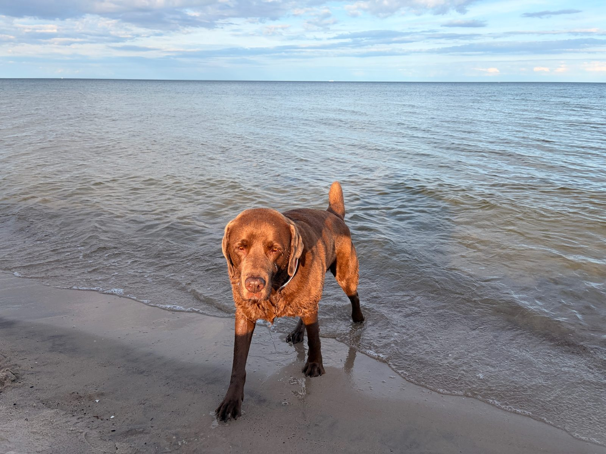
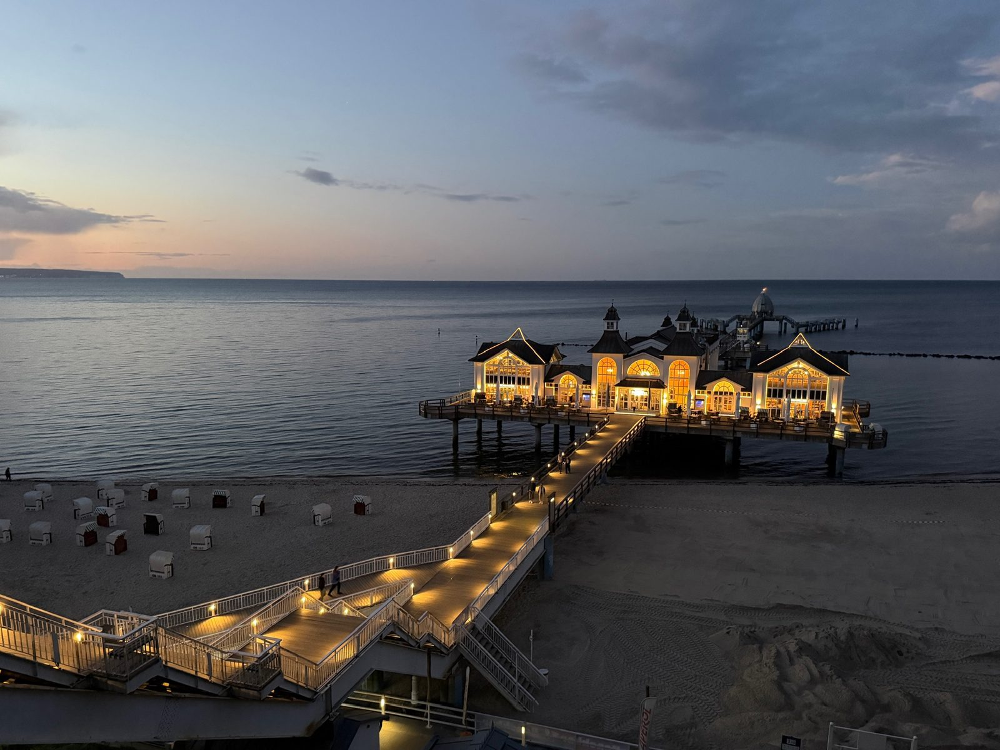

8.–9. September 2026
Erste Eindrücke auf Rügen

Angekommen auf Rügen – die ersten Tage zum Ankommen und Erkunden, bevor die große Bornholm-Radtour losgeht.

8.–9. September 2026

Angekommen auf Rügen – die ersten Tage zum Ankommen und Erkunden, bevor die große Bornholm-Radtour losgeht.
